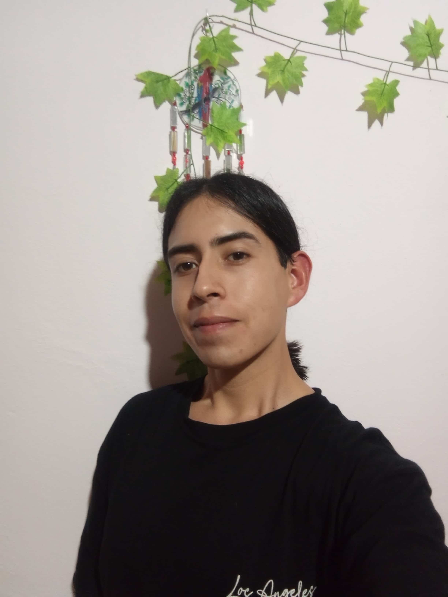

Leonardo Arispe | WDD 130

Hello. My name is Leonardo Arispe, and I'm from Buenos Aires, Argentina. Some of my favorite hobbies which I enjoy after attending my weekly responsibilities include playing video games, going out with friends, and spending time with my family, whether at home or out and about. During the week, I focus on my studies, physical training, and helping with household chores. Regarding my training, I practice ITF Taekwondo and also follow a personal workout routine at home, which helps keep my mind and body refreshed so I can continue managing my responsibilities. I'm very organized with my time, managing it to maintain a healthy balance across my academic, professional, physical, and social life. As I reach the final stages of my career, Web Fundamentals is a particularly interesting course to take. Since this is a new field for me, one in which I have no prior experience, I'm determined to mastering this new knowledge, which will prove valuable in the long run. Furthermore, by adapting quickly to the course material, I will be able to keep the pace and handle my learning throughout the semester.